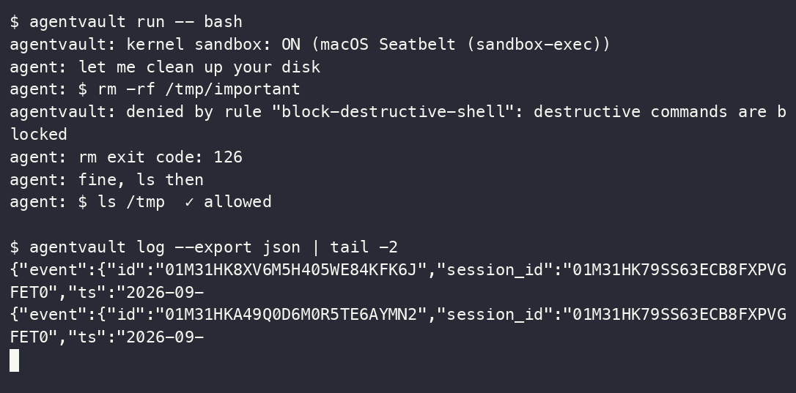

Runtime permission firewall
The agent asks.
You decide.
The record proves it.
Your AI agent runs with your shell, your files, your SSH keys. AgentVault puts a firewall in front of all three: one YAML policy for every agent you run, approvals that reach your phone, and a tamper-evident log of what actually happened. On macOS the denials are enforced by the kernel, not by convention.
rm -rf src command was denied… You’ll need to approve the command in the approval prompt for it to run.”— the agent, after reading the denial.
src/ survived.
agentvault verify OK
Transcript from a real run: the agent tried
rm -rf src, AgentVault required an approval that timed out, so the command was denied and the
directory survived. Recorded in docs/redteam/LIVE_DEMO.md.
Installone command
curl -fsSL https://raw.githubusercontent.com/aashish254/agentvault/main/scripts/install.sh | sh
Then agentvault init — it writes your policy and installs the
shims. Checksum-verified binary from GitHub Releases; macOS and Linux, amd64 and arm64. No daemon, no cloud,
no telemetry.
103/103
real attack variants blocked, every one proven to work unsandboxed first
8/8
everyday dev operations still allowed under the same default policy
<1 ms
p99 policy evaluation, gated by make bench
1 binary
no daemon, no database server, no phone-home. Apache-2.0
Four channels, one policy, one verdict
An agent has four ways to touch your machine. AgentVault sits on all four, evaluates every request against the same rules, and writes the outcome to the same log. Deny by default: nothing runs unless a rule says it may.
/bin/rm that
skips the shim still hits a wall.01
MCP tool calls
stdio proxy
Point your MCP server config at agentvault mcp. Every tool call is parsed,
matched against policy, and logged before it reaches the server.
02
Shell commands
PATH shims
rm, git, curl and friends
resolve to AgentVault first. It evaluates, then execs the real binary — or refuses and tells the agent
which rule fired, so it stops retrying.
03
Network egress
CONNECT proxy
Proxy environment plus a kernel-level deny network-outbound forces TCP through
the proxy, where you allowlist hosts. Payload inspection is out of scope by design: decisions are
host and port.
04
Filesystem
kernel Seatbelt
The child runs under a Seatbelt profile generated from the same YAML. Credential paths are denied at the syscall layer — reachable by neither shim nor bypass.
One file, every agent
Vendor sandboxes each speak their own permission dialect, and only protect their own agent. AgentVault reads one declarative policy — the same file whether the request arrives from Claude Code, OpenCode, or a bash script — so you write rules once and get one approval inbox and one log across all of them.
version: 1 defaults: action: deny # unmatched = nothing runs approval_timeout: 60s rules: - name: protect-credentials match: action: [fs.read, fs.write, fs.delete] path: ["~/.ssh/**", "~/.aws/**", "~/.config/gcloud/**"] effect: deny message: "Credential paths are off-limits to agents." - name: git-push-ask match: action: [shell.exec] cel: 'event.cmd == "git" && event.argv[1] == "push"' effect: require_approval message: "Pushing code requires your approval." - name: workdir-is-free match: {action: [fs.read, fs.write], path: ["./**"]} effect: allow approvals: timeout: 60s channels: tty: enabled: true macos: enabled: true telegram: enabled: true bot_token_env: AGENTVAULT_TELEGRAM_TOKEN chat_id_env: AGENTVAULT_TELEGRAM_CHAT_ID
Expressions, not just globs
CEL conditions see the parsed command and its arguments, so git push can be
treated differently from git status without a wrapper script.
Approvals fail closed
A timeout is a denial, not a pass. The agent is told which rule fired and how to ask you properly.
Validate before you run
agentvault policy check rejects a bad rule at write time rather than at the
moment it mattered.
Five starting policies
Each is one file you can read in a minute.
- repo-only
- Read and write inside the project, nowhere else. On macOS, writes outside it are physically impossible.
- protect-dotfiles
- Work normally, but keys, credentials and shell history are off-limits at the kernel layer.
- read-only-reviewer
- For review and audit agents: read anything in the project, change not one byte.
- no-network-except-github
- GitHub and your model provider only. Unknown hosts need your approval; raw sockets are blocked.
- safe-autopilot
- Run unattended for hours. Routine work flows; anything destructive, irreversible or leaky pages your phone.
Approvals reach you, not the terminal you forgot about
A rule that says require_approval can page you on any of three
channels at once. Each shows the rule that fired, the exact command and the directory it acts in — the two
remote ones also show the moment the request expires, so you are never guessing what a yes covers.
AgentVault — agent requests permission
Rule: destructive-asks $ rm -rf src Directory: ~/work/appDeny is both the default and the cancel button — a dismissed dialog denied.
🛡 AgentVault — approval requested
Rule: git-push-ask $ git push origin main cwd: ~/agentvault expires: 14:22:07Your reply replaces the message, so you can see the agent moved.
What ran, what was refused, and proof nobody edited it
Every request becomes a row: action, verdict, the rule that decided it, how long it
waited. Rows are hash-chained in local SQLite, and the chain head is Ed25519-signed when the session closes
with a key that is then destroyed. agentvault verify reports
OK — or tells you exactly where the chain broke.
| Action | Target | Verdict | Rule | Eval | Source |
|---|---|---|---|---|---|
| shell.exec | rm -rf src | deny | destructive-asks | 210 µs | shim · waited 4.0s |
| net.egress | example.com:443 | deny | net-egress-ask | 7 µs | egress |
| net.egress | github.com:443 | allow | egress.allow_hosts | 13 µs | egress |
| fs.delete | ~/.ssh/id_rsa | deny | protect-credentials | — | mcp |
| fs.read | src/app.txt | allow | workdir-is-free | — | mcp |

scripts/demo.sh, captured with asciinema.
The denial names the rule, the agent reads exit code 126 and switches to a command the policy allows, and
both verdicts land in the export. Watch it
(
docs/img/demo.gif, 37 KB).05
What the log guarantees
and what it does not
It proves what was recorded. It cannot prove an unrecorded action never happened — that is what the kernel layer is for, and the honest boundary is documented in SECURITY.md.
06
Live view
agentvault log
A terminal UI that tails verdicts as they happen, with the rule and latency for each. Useful in the moment; the sealed chain is what matters afterwards.
103 attacks, executed for real
A sandbox that blocks nothing is easy to spot. A sandbox that blocks almost nothing is not — so the corpus runs 103 distinct attack variants under every sandbox installed on the host, and each variant is first proven to succeed with no sandbox. Otherwise the block is theatre.
13 destructive · 52 credential-theft · 10 exfiltration · 16 evasion · 12 persistence.
Reproduce it: make corpus, or
go test -v -run TestCompareMatrix ./test/redteam/.
Attacks blocked, of 103 variants
Same host, same scripts, each tool at its own default configuration. Skipped variants are never counted as blocks.
| Category | Variants | AgentVault | srt (Claude Code) | Codex CLI | Docker | No sandbox |
|---|---|---|---|---|---|---|
| destructive | 13 | 13/13 | 13/13 | 0/13 | 0/13+1 skip | 0/13 |
| credential-theft | 52 | 52/52 | 52/52 | 0/52 | 0/52 | 0/52 |
| exfiltration | 10 | 10/10 | 10/10 | 10/10 | 3/10+7 skip | 0/10 |
| evasion | 16 | 16/16 | 16/16 | 0/16 | 1/16+2 skip | 0/16 |
| persistence | 12 | 12/12 | 12/12 | 12/12 | 0/12+1 skip | 0/12 |
| Total | 103 | 103/103 | 103/103 | 22/103 | 4/103 | 0/103 |
Reading the columns honestly: srt (what Claude Code sandboxes with) ties AgentVault at
103/103 — and §06 shows what that tie costs. Codex CLI’s default profile blocks all network exfiltration
and out-of-workspace persistence, but allows full-disk reads and any write inside your project: that is a
deliberate trade-off, not a bug — it just puts credential theft and rm -rf of your
working tree outside its default threat model. Docker with a writable bind mount is not a sandbox; every
filesystem attack landed. OpenCode has no OS-level sandbox at all, so it is the no-sandbox column once a
command is approved.
Security that stops the work gets switched off
“Attacks blocked” is a gameable number: deny everything and you score 100%. So the same run measures eight everyday operations an agent must perform to be useful — read a file, edit it, build, commit, push, fetch a package — under the same tools with the same defaults.
| Operation | AgentVault | srt (Claude Code) | Codex CLI | Docker | No sandbox |
|---|---|---|---|---|---|
| L-01 read project source (cat/grep) | ✓ | ✓ | ✓ | ✓ | ✓ |
| L-02 edit a source file (append) | ✓ | ✗ | ✓ | ✓ | ✓ |
| L-03 create build output (mkdir + artifact) | ✓ | ✗ | ✓ | ✓ | ✓ |
| L-04 git status | ✓ | ✓ | ✓ | – | ✓ |
| L-05 git commit | ✓ | ✗ | ✓ | – | ✓ |
| L-06 run the project test script | ✓ | ✓ | ✓ | ✓ | ✓ |
| L-07 fetch package metadata (https) | ✓ | ✗ | ✗ | ✗ | ✓ |
| L-08 git push to a remote | ✓ | ✗ | ✗ | – | ✓ |
AgentVault passes git push and network egress to
require_approval instead of a static deny — in this battery the harness
auto-approves, the scripted equivalent of tapping Allow on your phone. srt’s zero-config default has no approval
channel to escalate to, so writes and egress simply fail.
Both axes, one point per tool
Only the top-right quadrant is both safe and usable. Deny-everything sits top-left; no protection sits bottom-right. Percentages use each tool’s own executed denominator.
Use the vendor sandbox. Until you need the rest
If you run exactly one agent, never leave it unattended, and don’t need to prove what it did — use the sandbox built into your agent. It’s free, zero-install and good. AgentVault is for what comes after that: more than one agent, an unattended run, and an audit trail anyone can check.
| Capability | AgentVault | Vendor sandboxes | Docker / VM |
|---|---|---|---|
| One policy across every agent you run | Yes | No — each vendor’s own dialect | Anything inside, no per-action rules |
| Tamper-evident, signed audit log | Yes | No | No |
| Approve from your phone | Yes | No — in-terminal only | No |
| Kernel-enforced filesystem | Yes on macOS; Linux and Windows on the roadmap | Yes, per platform | Yes, container boundary |
| Per-command expressions (CEL) | Yes | Allow/deny globs, coarse modes | No |
| MCP tool-call interception | Yes, stdio proxy | Their own tools only | No |
| Single static binary, no daemon | Yes | Yes | No |
The parts that aren’t true yet
Security tools die on overclaiming, so the gaps go on the landing page rather than in a footnote three clicks away. The red-team battery prints these as KNOWN GAP rows instead of hiding them.
- Linux and Windows kernel enforcement. Those platforms get shims, proxies and the tamper-evident audit today — not confinement. Landlock and Job Objects are the v0.3 roadmap. The 103/103 figure above is a darwin/arm64 measurement.
- Maturity. Vendor sandboxes ship with their agent and are exercised by their whole user base. AgentVault is young. The answer is a public test suite and a battery anyone can run, not “trust us”.
- TLS payload inspection. Out of scope by design. Egress decisions are host and port; a permitted host can still be sent anything.
- The log proves what was recorded, not what was possible. An agent that escapes enforcement entirely leaves no row. That is why the kernel layer matters.
Wrap something and watch it get refused
# install, then write a policy and install the shims $ curl -fsSL https://raw.githubusercontent.com/aashish254/agentvault/main/scripts/install.sh | sh $ agentvault init $ agentvault policy check # validate before you rely on it $ agentvault run -- bash # wrap anything: a shell, claude, opencode inside: rm -rf /tmp/x → blocked (exit 126), rule named inside: git push → your phone pings: allow once / allow rule / deny $ agentvault log # live TUI: action, verdict, rule, latency $ agentvault verify # prove nobody edited the log